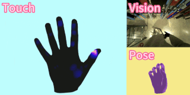
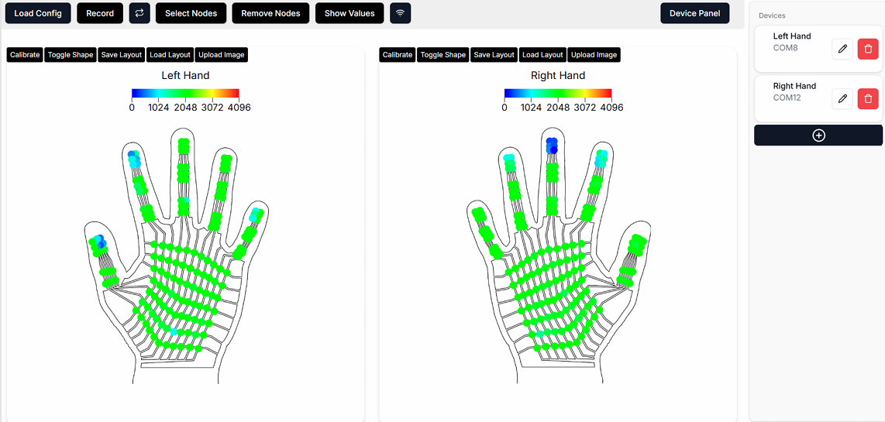
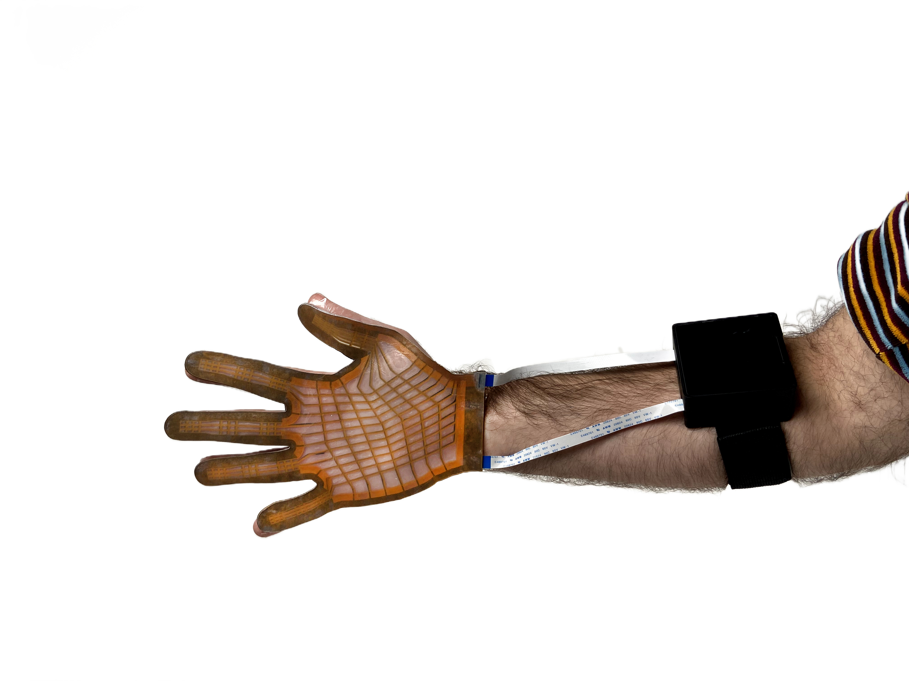
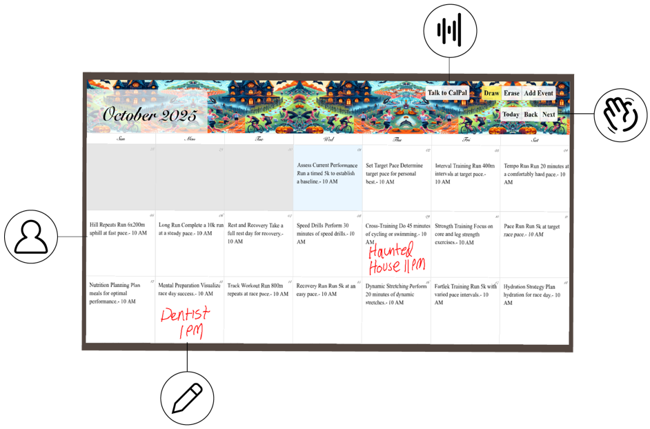

Biography
Hello! I'm a first year Ph.D student at University of Washington ECE, advised by
Prof. Yiyue Luo and Prof. Akshay Gadre.
Previously, I completed my Bachelor's and Master's degrees at MIT EECS advised by Prof. Wojciech Matusik
in CSAIL and Prof. Paul Pu Liang at the Media Lab.
I research how to create scalable, sustainable systems for sensing the human body and its interactions with the world. Drawn to systems that do more with less, my interests are in fabrication techniques for low profile
wearables, wireless sensing, and physical artificial intelligence.
[...]
Research
(* indicates equal contribution)

@misc{song2025opentouchbringingfullhandtouch,
title={OPENTOUCH: Bringing Full-Hand Touch to Real-World Interaction},
author={Yuxin Ray Song and Jinzhou Li and Rao Fu and Devin Murphy and Kaichen Zhou and Rishi Shiv and Yaqi Li and Haoyu Xiong and Crystal Elaine Owens and Yilun Du and Yiyue Luo and Xianyi Cheng and Antonio Torralba and Wojciech Matusik and Paul Pu Liang},
year={2025},
eprint={2512.16842},
archivePrefix={arXiv},
primaryClass={cs.CV},
url={https://arxiv.org/abs/2512.16842},
}

@misc{murphy2024wiresenstoolkitopensourceplatform,
title={WiReSens Toolkit: An Open-source Platform towards Accessible Wireless Tactile Sensing},
author={Devin Murphy and Junyi Zhu and Paul Pu Liang and Wojciech Matusik and Yiyue Luo},
year={2024},
eprint={2412.00247},
archivePrefix={arXiv},
primaryClass={cs.HC},
url={https://arxiv.org/abs/2412.00247},
}

@inproceedings{10.1145/3706599.3720147,
author = {Murphy, Devin and Li, Yichen and Owens, Crystal Elaine and Stanton, Layla and Liang, Paul Pu and Luo, Yiyue and Torralba, Antonio and Matusik, Wojciech},
title = {Fits like a Flex-Glove: Automatic Design of Personalized FPCB-Based Tactile Sensing Gloves},
year = {2025},
isbn = {9798400713958},
publisher = {Association for Computing Machinery},
address = {New York, NY, USA},
url = {https://doi.org/10.1145/3706599.3720147},
doi = {10.1145/3706599.3720147},
booktitle = {Proceedings of the Extended Abstracts of the CHI Conference on Human Factors in Computing Systems},
articleno = {280},
numpages = {8},
keywords = {Tactile Sensing, Flexible PCB, Wearable Devices},
series = {CHI EA '25}
}

Projects from Undergrad Research and Coursework
![[speech]](assets/speechformants/speech.png)
![[forthem]](assets/forthem/featured.png)
Education
M.Eng in Electrical Engineering and Computer Science
Feb. 2024 - May 2025
B.Sc in Electrical Engineering and Computer Science
Sep. 2018 - May 2022
Cambridge, MA
Experience
Teaching Assistant | 6.8800 Biomedical Signal and Image Processing
Feb. 2024 - May 2024
Cambridge, MA